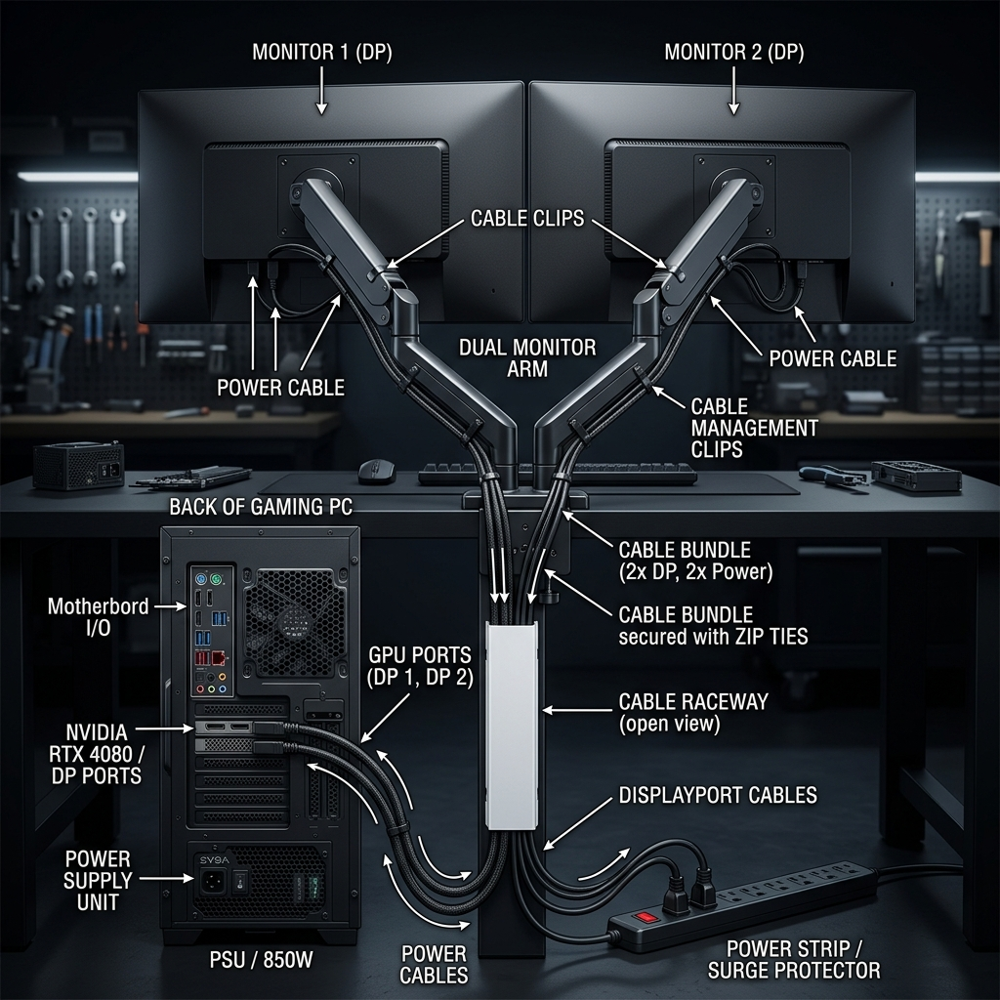
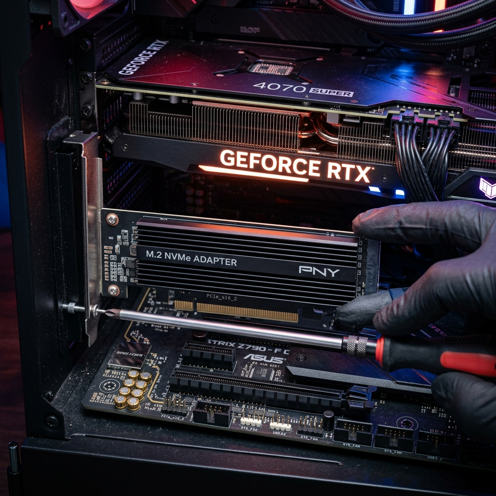

レベルインフィニティ×Pixioアームを極限まで美しく、完璧に構築するためのプロフェッショナルな組み立て・配線・増設手順書。
大型GPU（RX9070XT）は自重でPCIeスロットが折れるリスクがあるため、出荷時に巨大な発泡ウレタンが内部に詰められています。必ずガラスパネルを開け、すべての緩衝材を抜き取ってから電源を入れてください（発煙原因になります）。
Pixioのガス圧アームは「組み立て後の調整」が全てです。
組み立てる人間の視点に立ち、最も美しく安全な経路（ルーティング）で配線を行います。

既存のM.2スロットが埋まっている状態から、PCIe拡張カードを利用して新たなNVMeストレージを爆速で増設するための本格的なハードウェア・ハッキングです。

以前のルーターから付け替える場合、モデムの電源を1分間抜いて再起動しないとIPが割り当てられません。
先ほど増設した大容量のNVMe SSD（例：Dドライブ）を、各種ゲームのインストール先に指定する作業です。